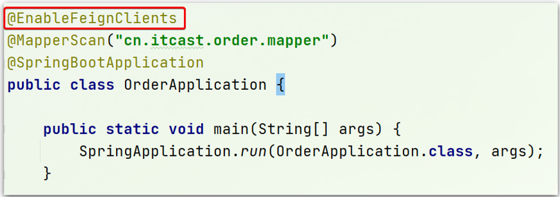

1.Nacos配置管理
Nacos除了可以做注册中心，同样可以做配置管理来使用。
1.1.统一配置管理
当微服务部署的实例越来越多，达到数十、数百时，逐个修改微服务配置就会让人抓狂，而且很容易出错。我们需要一种统一配置管理方案，可以集中管理所有实例的配置。

Nacos一方面可以将配置集中管理，另一方可以在配置变更时，及时通知微服务，实现配置的热更新。
1.1.1.在nacos中添加配置文件
如何在nacos中管理配置呢？

然后在弹出的表单中，填写配置信息：

注意：项目的核心配置，需要热更新的配置才有放到nacos管理的必要。基本不会变更的一些配置还是保存在微服务本地比较好。
1.1.2.从微服务拉取配置
微服务要拉取nacos中管理的配置，并且与本地的application.yml配置合并，才能完成项目启动。
但如果尚未读取application.yml，又如何得知nacos地址呢？
因此spring引入了一种新的配置文件：bootstrap.yaml文件，会在application.yml之前被读取，流程如下：

1）引入nacos-config依赖
首先，在user-service服务中，引入nacos-config的客户端依赖：
<!--nacos配置管理依赖-->
<dependency>
<groupId>com.alibaba.cloud</groupId>
<artifactId>spring-cloud-starter-alibaba-nacos-config</artifactId>
</dependency>
2）添加bootstrap.yaml
然后，在user-service中添加一个bootstrap.yaml文件，内容如下：
spring:
application:
name: userservice # 服务名称
profiles:
active: dev #开发环境，这里是dev
cloud:
nacos:
server-addr: localhost:8848 # Nacos地址
config:
file-extension: yaml # 文件后缀名
这里会根据spring.cloud.nacos.server-addr获取nacos地址，再根据
${spring.application.name}-${spring.profiles.active}.${spring.cloud.nacos.config.file-extension}作为文件id，来读取配置。
本例中，就是去读取userservice-dev.yaml：

3）读取nacos配置
在user-service中的UserController中添加业务逻辑，读取pattern.dateformat配置：

完整代码：
package cn.itcast.user.web;
import cn.itcast.user.pojo.User;
import cn.itcast.user.service.UserService;
import lombok.extern.slf4j.Slf4j;
import org.springframework.beans.factory.annotation.Autowired;
import org.springframework.beans.factory.annotation.Value;
import org.springframework.web.bind.annotation.*;
import java.time.LocalDateTime;
import java.time.format.DateTimeFormatter;
@Slf4j
@RestController
@RequestMapping("/user")
public class UserController {
@Autowired
private UserService userService;
@Value("${pattern.dateformat}")
private String dateformat;
@GetMapping("now")
public String now(){
return LocalDateTime.now().format(DateTimeFormatter.ofPattern(dateformat));
}
// ...略
}
在页面访问，可以看到效果：

1.2.配置热更新
我们最终的目的，是修改nacos中的配置后，微服务中无需重启即可让配置生效，也就是配置热更新。
要实现配置热更新，可以使用两种方式：
1.2.1.方式一
在@Value注入的变量所在类上添加注解@RefreshScope：

1.2.2.方式二
使用@ConfigurationProperties注解代替@Value注解。
在user-service服务中，添加一个类，读取patterrn.dateformat属性：
package cn.itcast.user.config;
import lombok.Data;
import org.springframework.boot.context.properties.ConfigurationProperties;
import org.springframework.stereotype.Component;
@Component
@Data
@ConfigurationProperties(prefix = "pattern")
public class PatternProperties {
private String dateformat;
}
在UserController中使用这个类代替@Value：

完整代码：
package cn.itcast.user.web;
import cn.itcast.user.config.PatternProperties;
import cn.itcast.user.pojo.User;
import cn.itcast.user.service.UserService;
import lombok.extern.slf4j.Slf4j;
import org.springframework.beans.factory.annotation.Autowired;
import org.springframework.web.bind.annotation.GetMapping;
import org.springframework.web.bind.annotation.PathVariable;
import org.springframework.web.bind.annotation.RequestMapping;
import org.springframework.web.bind.annotation.RestController;
import java.time.LocalDateTime;
import java.time.format.DateTimeFormatter;
@Slf4j
@RestController
@RequestMapping("/user")
public class UserController {
@Autowired
private UserService userService;
@Autowired
private PatternProperties patternProperties;
@GetMapping("now")
public String now(){
return LocalDateTime.now().format(DateTimeFormatter.ofPattern(patternProperties.getDateformat()));
}
// 略
}
1.3.配置共享
其实微服务启动时，会去nacos读取多个配置文件，例如：
-
[spring.application.name]-[spring.profiles.active].yaml，例如：userservice-dev.yaml -
[spring.application.name].yaml，例如：userservice.yaml
而[spring.application.name].yaml不包含环境，因此可以被多个环境共享。
下面我们通过案例来测试配置共享
1）添加一个环境共享配置
我们在nacos中添加一个userservice.yaml文件：

2）在user-service中读取共享配置
在user-service服务中，修改PatternProperties类，读取新添加的属性：

在user-service服务中，修改UserController，添加一个方法：

3）运行两个UserApplication，使用不同的profile
修改UserApplication2这个启动项，改变其profile值：


这样，UserApplication(8081)使用的profile是dev，UserApplication2(8082)使用的profile是test。
启动UserApplication和UserApplication2
访问http://localhost:8081/user/prop，结果：

访问http://localhost:8082/user/prop，结果：

可以看出来，不管是dev，还是test环境，都读取到了envSharedValue这个属性的值。
4）配置共享的优先级
当nacos、服务本地同时出现相同属性时，优先级有高低之分：

1.4.搭建Nacos集群
Nacos生产环境下一定要部署为集群状态，部署方式参考课前资料中的文档：

2.Feign远程调用
先来看我们以前利用RestTemplate发起远程调用的代码：

存在下面的问题：
•代码可读性差，编程体验不统一
•参数复杂URL难以维护
Feign是一个声明式的http客户端，官方地址：https://github.com/OpenFeign/feign
其作用就是帮助我们优雅的实现http请求的发送，解决上面提到的问题。

2.1.Feign替代RestTemplate
Fegin的使用步骤如下：
1）引入依赖
我们在order-service服务的pom文件中引入feign的依赖：
<dependency>
<groupId>org.springframework.cloud</groupId>
<artifactId>spring-cloud-starter-openfeign</artifactId>
</dependency>
2）添加注解
在order-service的启动类添加注解开启Feign的功能：

3）编写Feign的客户端
在order-service中新建一个接口，内容如下：
package cn.itcast.order.client;
import cn.itcast.order.pojo.User;
import org.springframework.cloud.openfeign.FeignClient;
import org.springframework.web.bind.annotation.GetMapping;
import org.springframework.web.bind.annotation.PathVariable;
@FeignClient("userservice")
public interface UserClient {
@GetMapping("/user/{id}")
User findById(@PathVariable("id") Long id);
}
这个客户端主要是基于SpringMVC的注解来声明远程调用的信息，比如：
- 服务名称：userservice
- 请求方式：GET
- 请求路径：/user/{id}
- 请求参数：Long id
- 返回值类型：User
这样，Feign就可以帮助我们发送http请求，无需自己使用RestTemplate来发送了。
4）测试
修改order-service中的OrderService类中的queryOrderById方法，使用Feign客户端代替RestTemplate：

是不是看起来优雅多了。
5）总结
使用Feign的步骤：
① 引入依赖
② 添加@EnableFeignClients注解
③ 编写FeignClient接口
④ 使用FeignClient中定义的方法代替RestTemplate
2.2.自定义配置
Feign可以支持很多的自定义配置，如下表所示：
| 类型 | 作用 | 说明 |
|---|---|---|
| feign.Logger.Level | 修改日志级别 | 包含四种不同的级别：NONE、BASIC、HEADERS、FULL |
| feign.codec.Decoder | 响应结果的解析器 | http远程调用的结果做解析，例如解析json字符串为java对象 |
| feign.codec.Encoder | 请求参数编码 | 将请求参数编码，便于通过http请求发送 |
| feign. Contract | 支持的注解格式 | 默认是SpringMVC的注解 |
| feign. Retryer | 失败重试机制 | 请求失败的重试机制，默认是没有，不过会使用Ribbon的重试 |
一般情况下，默认值就能满足我们使用，如果要自定义时，只需要创建自定义的@Bean覆盖默认Bean即可。
下面以日志为例来演示如何自定义配置。
2.2.1.配置文件方式
基于配置文件修改feign的日志级别可以针对单个服务：
feign:
client:
config:
userservice: # 针对某个微服务的配置
loggerLevel: FULL # 日志级别
也可以针对所有服务：
feign:
client:
config:
default: # 这里用default就是全局配置，如果是写服务名称，则是针对某个微服务的配置
loggerLevel: FULL # 日志级别
而日志的级别分为四种：
- NONE：不记录任何日志信息，这是默认值。
- BASIC：仅记录请求的方法，URL以及响应状态码和执行时间
- HEADERS：在BASIC的基础上，额外记录了请求和响应的头信息
- FULL：记录所有请求和响应的明细，包括头信息、请求体、元数据。
2.2.2.Java代码方式
也可以基于Java代码来修改日志级别，先声明一个类，然后声明一个Logger.Level的对象：
public class DefaultFeignConfiguration {
@Bean
public Logger.Level feignLogLevel(){
return Logger.Level.BASIC; // 日志级别为BASIC
}
}
如果要全局生效，将其放到启动类的@EnableFeignClients这个注解中：
@EnableFeignClients(defaultConfiguration = DefaultFeignConfiguration .class)
如果是局部生效，则把它放到对应的@FeignClient这个注解中：
@FeignClient(value = "userservice", configuration = DefaultFeignConfiguration .class)
2.3.Feign使用优化
Feign底层发起http请求，依赖于其它的框架。其底层客户端实现包括：
•URLConnection：默认实现，不支持连接池
•Apache HttpClient ：支持连接池
•OKHttp：支持连接池
因此提高Feign的性能主要手段就是使用连接池代替默认的URLConnection。
这里我们用Apache的HttpClient来演示。
1）引入依赖
在order-service的pom文件中引入Apache的HttpClient依赖：
<!--httpClient的依赖 -->
<dependency>
<groupId>io.github.openfeign</groupId>
<artifactId>feign-httpclient</artifactId>
</dependency>
2）配置连接池
在order-service的application.yml中添加配置：
feign:
client:
config:
default: # default全局的配置
loggerLevel: BASIC # 日志级别，BASIC就是基本的请求和响应信息
httpclient:
enabled: true # 开启feign对HttpClient的支持
max-connections: 200 # 最大的连接数
max-connections-per-route: 50 # 每个路径的最大连接数
接下来，在FeignClientFactoryBean中的loadBalance方法中打断点：

Debug方式启动order-service服务，可以看到这里的client，底层就是Apache HttpClient：

总结，Feign的优化：
1.日志级别尽量用basic
2.使用HttpClient或OKHttp代替URLConnection
① 引入feign-httpClient依赖
② 配置文件开启httpClient功能，设置连接池参数
2.4.最佳实践
所谓最近实践，就是使用过程中总结的经验，最好的一种使用方式。
自习观察可以发现，Feign的客户端与服务提供者的controller代码非常相似：
feign客户端：

UserController：

有没有一种办法简化这种重复的代码编写呢？
2.4.1.继承方式
一样的代码可以通过继承来共享：
1）定义一个API接口，利用定义方法，并基于SpringMVC注解做声明。
2）Feign客户端和Controller都集成改接口

优点：
- 简单
- 实现了代码共享
缺点：
-
服务提供方、服务消费方紧耦合
-
参数列表中的注解映射并不会继承，因此Controller中必须再次声明方法、参数列表、注解
2.4.2.抽取方式
将Feign的Client抽取为独立模块，并且把接口有关的POJO、默认的Feign配置都放到这个模块中，提供给所有消费者使用。
例如，将UserClient、User、Feign的默认配置都抽取到一个feign-api包中，所有微服务引用该依赖包，即可直接使用。

2.4.3.实现基于抽取的最佳实践
1）抽取
首先创建一个module，命名为feign-api：

项目结构：

在feign-api中然后引入feign的starter依赖
<dependency>
<groupId>org.springframework.cloud</groupId>
<artifactId>spring-cloud-starter-openfeign</artifactId>
</dependency>
然后，order-service中编写的UserClient、User、DefaultFeignConfiguration都复制到feign-api项目中

2）在order-service中使用feign-api
首先，删除order-service中的UserClient、User、DefaultFeignConfiguration等类或接口。
在order-service的pom文件中中引入feign-api的依赖：
<dependency>
<groupId>cn.itcast.demo</groupId>
<artifactId>feign-api</artifactId>
<version>1.0</version>
</dependency>
修改order-service中的所有与上述三个组件有关的导包部分，改成导入feign-api中的包
3）重启测试
重启后，发现服务报错了：

这是因为UserClient现在在cn.itcast.feign.clients包下，
而order-service的@EnableFeignClients注解是在cn.itcast.order包下，不在同一个包，无法扫描到UserClient。
4）解决扫描包问题
方式一：
指定Feign应该扫描的包：
@EnableFeignClients(basePackages = "cn.itcast.feign.clients")
方式二：
指定需要加载的Client接口：
@EnableFeignClients(clients = {UserClient.class})
3.Gateway服务网关
Spring Cloud Gateway 是 Spring Cloud 的一个全新项目，该项目是基于 Spring 5.0，Spring Boot 2.0 和 Project Reactor 等响应式编程和事件流技术开发的网关，它旨在为微服务架构提供一种简单有效的统一的 API 路由管理方式。
3.1.为什么需要网关
Gateway网关是我们服务的守门神，所有微服务的统一入口。
网关的核心功能特性：
- 请求路由
- 权限控制
- 限流
架构图：

权限控制：网关作为微服务入口，需要校验用户是是否有请求资格，如果没有则进行拦截。
路由和负载均衡：一切请求都必须先经过gateway，但网关不处理业务，而是根据某种规则，把请求转发到某个微服务，这个过程叫做路由。当然路由的目标服务有多个时，还需要做负载均衡。
限流：当请求流量过高时，在网关中按照下流的微服务能够接受的速度来放行请求，避免服务压力过大。
在SpringCloud中网关的实现包括两种：
- gateway
- zuul
Zuul是基于Servlet的实现，属于阻塞式编程。而SpringCloudGateway则是基于Spring5中提供的WebFlux，属于响应式编程的实现，具备更好的性能。
3.2.gateway快速入门
下面，我们就演示下网关的基本路由功能。基本步骤如下：
- 创建SpringBoot工程gateway，引入网关依赖
- 编写启动类
- 编写基础配置和路由规则
- 启动网关服务进行测试
1）创建gateway服务，引入依赖
创建服务：

引入依赖：
<!--网关-->
<dependency>
<groupId>org.springframework.cloud</groupId>
<artifactId>spring-cloud-starter-gateway</artifactId>
</dependency>
<!--nacos服务发现依赖-->
<dependency>
<groupId>com.alibaba.cloud</groupId>
<artifactId>spring-cloud-starter-alibaba-nacos-discovery</artifactId>
</dependency>
2）编写启动类
package cn.itcast.gateway;
import org.springframework.boot.SpringApplication;
import org.springframework.boot.autoconfigure.SpringBootApplication;
@SpringBootApplication
public class GatewayApplication {
public static void main(String[] args) {
SpringApplication.run(GatewayApplication.class, args);
}
}
3）编写基础配置和路由规则
创建application.yml文件，内容如下：
server:
port: 10010 # 网关端口
spring:
application:
name: gateway # 服务名称
cloud:
nacos:
server-addr: localhost:8848 # nacos地址
gateway:
routes: # 网关路由配置
- id: user-service # 路由id，自定义，只要唯一即可
# uri: http://127.0.0.1:8081 # 路由的目标地址 http就是固定地址
uri: lb://userservice # 路由的目标地址 lb就是负载均衡，后面跟服务名称
predicates: # 路由断言，也就是判断请求是否符合路由规则的条件
- Path=/user/** # 这个是按照路径匹配，只要以/user/开头就符合要求
我们将符合Path 规则的一切请求，都代理到 uri参数指定的地址。
本例中，我们将 /user/**开头的请求，代理到lb://userservice，lb是负载均衡，根据服务名拉取服务列表，实现负载均衡。
4）重启测试
重启网关，访问http://localhost:10010/user/1时，符合/user/**规则，请求转发到uri：http://userservice/user/1，得到了结果：

5）网关路由的流程图
整个访问的流程如下：

总结：
网关搭建步骤：
-
创建项目，引入nacos服务发现和gateway依赖
-
配置application.yml，包括服务基本信息、nacos地址、路由
路由配置包括：
-
路由id：路由的唯一标示
-
路由目标（uri）：路由的目标地址，http代表固定地址，lb代表根据服务名负载均衡
-
路由断言（predicates）：判断路由的规则，
-
路由过滤器（filters）：对请求或响应做处理
接下来，就重点来学习路由断言和路由过滤器的详细知识
3.3.断言工厂
我们在配置文件中写的断言规则只是字符串，这些字符串会被Predicate Factory读取并处理，转变为路由判断的条件
例如Path=/user/**是按照路径匹配，这个规则是由
org.springframework.cloud.gateway.handler.predicate.PathRoutePredicateFactory类来
处理的，像这样的断言工厂在SpringCloudGateway还有十几个:
| 名称 | 说明 | 示例 |
|---|---|---|
| After | 是某个时间点后的请求 | - After=2037-01-20T17:42:47.789-07:00[America/Denver] |
| Before | 是某个时间点之前的请求 | - Before=2031-04-13T15:14:47.433+08:00[Asia/Shanghai] |
| Between | 是某两个时间点之前的请求 | - Between=2037-01-20T17:42:47.789-07:00[America/Denver], 2037-01-21T17:42:47.789-07:00[America/Denver] |
| Cookie | 请求必须包含某些cookie | - Cookie=chocolate, ch.p |
| Header | 请求必须包含某些header | - Header=X-Request-Id, \d+ |
| Host | 请求必须是访问某个host（域名） | - Host=.somehost.org,.anotherhost.org |
| Method | 请求方式必须是指定方式 | - Method=GET,POST |
| Path | 请求路径必须符合指定规则 | - Path=/red/{segment},/blue/** |
| Query | 请求参数必须包含指定参数 | - Query=name, Jack或者- Query=name |
| RemoteAddr | 请求者的ip必须是指定范围 | - RemoteAddr=192.168.1.1/24 |
| Weight | 权重处理 |
我们只需要掌握Path这种路由工程就可以了。
3.4.过滤器工厂
GatewayFilter是网关中提供的一种过滤器，可以对进入网关的请求和微服务返回的响应做处理：

3.4.1.路由过滤器的种类
Spring提供了31种不同的路由过滤器工厂。例如：
| 名称 | 说明 |
|---|---|
| AddRequestHeader | 给当前请求添加一个请求头 |
| RemoveRequestHeader | 移除请求中的一个请求头 |
| AddResponseHeader | 给响应结果中添加一个响应头 |
| RemoveResponseHeader | 从响应结果中移除有一个响应头 |
| RequestRateLimiter | 限制请求的流量 |
3.4.2.请求头过滤器
下面我们以AddRequestHeader 为例来讲解。
需求：给所有进入userservice的请求添加一个请求头：Truth=itcast is freaking awesome!
只需要修改gateway服务的application.yml文件，添加路由过滤即可：
spring:
cloud:
gateway:
routes:
- id: user-service
uri: lb://userservice
predicates:
- Path=/user/**
filters: # 过滤器
- AddRequestHeader=Truth, Itcast is freaking awesome! # 添加请求头
当前过滤器写在userservice路由下，因此仅仅对访问userservice的请求有效。
3.4.3.默认过滤器
如果要对所有的路由都生效，则可以将过滤器工厂写到default下。格式如下：
spring:
cloud:
gateway:
routes:
- id: user-service
uri: lb://userservice
predicates:
- Path=/user/**
default-filters: # 默认过滤项
- AddRequestHeader=Truth, Itcast is freaking awesome!
3.4.4.总结
过滤器的作用是什么？
① 对路由的请求或响应做加工处理，比如添加请求头
② 配置在路由下的过滤器只对当前路由的请求生效
defaultFilters的作用是什么？
① 对所有路由都生效的过滤器
3.5.全局过滤器
上一节学习的过滤器，网关提供了31种，但每一种过滤器的作用都是固定的。如果我们希望拦截请求，做自己的业务逻辑则没办法实现。
3.5.1.全局过滤器作用
全局过滤器的作用也是处理一切进入网关的请求和微服务响应，与GatewayFilter的作用一样。区别在于GatewayFilter通过配置定义，处理逻辑是固定的；而GlobalFilter的逻辑需要自己写代码实现。
定义方式是实现GlobalFilter接口。
public interface GlobalFilter {
/**
* 处理当前请求，有必要的话通过{@link GatewayFilterChain}将请求交给下一个过滤器处理
*
* @param exchange 请求上下文，里面可以获取Request、Response等信息
* @param chain 用来把请求委托给下一个过滤器
* @return {@code Mono<Void>} 返回标示当前过滤器业务结束
*/
Mono<Void> filter(ServerWebExchange exchange, GatewayFilterChain chain);
}
在filter中编写自定义逻辑，可以实现下列功能：
- 登录状态判断
- 权限校验
- 请求限流等
3.5.2.自定义全局过滤器
需求：定义全局过滤器，拦截请求，判断请求的参数是否满足下面条件：
-
参数中是否有authorization，
-
authorization参数值是否为admin
如果同时满足则放行，否则拦截
实现：
在gateway中定义一个过滤器：
package cn.itcast.gateway.filters;
import org.springframework.cloud.gateway.filter.GatewayFilterChain;
import org.springframework.cloud.gateway.filter.GlobalFilter;
import org.springframework.core.annotation.Order;
import org.springframework.http.HttpStatus;
import org.springframework.stereotype.Component;
import org.springframework.web.server.ServerWebExchange;
import reactor.core.publisher.Mono;
@Order(-1)
@Component
public class AuthorizeFilter implements GlobalFilter {
@Override
public Mono<Void> filter(ServerWebExchange exchange, GatewayFilterChain chain) {
// 1.获取请求参数
MultiValueMap<String, String> params = exchange.getRequest().getQueryParams();
// 2.获取authorization参数
String auth = params.getFirst("authorization");
// 3.校验
if ("admin".equals(auth)) {
// 放行
return chain.filter(exchange);
}
// 4.拦截
// 4.1.禁止访问，设置状态码
exchange.getResponse().setStatusCode(HttpStatus.FORBIDDEN);
// 4.2.结束处理
return exchange.getResponse().setComplete();
}
}
3.5.3.过滤器执行顺序
请求进入网关会碰到三类过滤器：当前路由的过滤器、DefaultFilter、GlobalFilter
请求路由后，会将当前路由过滤器和DefaultFilter、GlobalFilter，合并到一个过滤器链（集合）中，排序后依次执行每个过滤器：

排序的规则是什么呢？
- 每一个过滤器都必须指定一个int类型的order值，order值越小，优先级越高，执行顺序越靠前。
- GlobalFilter通过实现Ordered接口，或者添加@Order注解来指定order值，由我们自己指定
- 路由过滤器和defaultFilter的order由Spring指定，默认是按照声明顺序从1递增。
- 当过滤器的order值一样时，会按照 defaultFilter > 路由过滤器 > GlobalFilter的顺序执行。
详细内容，可以查看源码：
org.springframework.cloud.gateway.route.RouteDefinitionRouteLocator#getFilters()方法是先加载defaultFilters，然后再加载某个route的filters，然后合并。
org.springframework.cloud.gateway.handler.FilteringWebHandler#handle()方法会加载全局过滤器，与前面的过滤器合并后根据order排序，组织过滤器链
3.6.跨域问题
3.6.1.什么是跨域问题
跨域：域名不一致就是跨域，主要包括：
-
域名不同： www.taobao.com 和 www.taobao.org 和 www.jd.com 和 miaosha.jd.com
-
域名相同，端口不同：localhost:8080和localhost8081
跨域问题：浏览器禁止请求的发起者与服务端发生跨域ajax请求，请求被浏览器拦截的问题
解决方案：CORS，这个以前应该学习过，这里不再赘述了。不知道的小伙伴可以查看https://www.ruanyifeng.com/blog/2016/04/cors.html
3.6.2.模拟跨域问题
找到课前资料的页面文件：

放入tomcat或者nginx这样的web服务器中，启动并访问。
可以在浏览器控制台看到下面的错误：

从localhost:8090访问localhost:10010，端口不同，显然是跨域的请求。
3.6.3.解决跨域问题
在gateway服务的application.yml文件中，添加下面的配置：
spring:
cloud:
gateway:
# 。。。
globalcors: # 全局的跨域处理
add-to-simple-url-handler-mapping: true # 解决options请求被拦截问题
corsConfigurations:
'[/**]':
allowedOrigins: # 允许哪些网站的跨域请求
- "http://localhost:8090"
allowedMethods: # 允许的跨域ajax的请求方式
- "GET"
- "POST"
- "DELETE"
- "PUT"
- "OPTIONS"
allowedHeaders: "*" # 允许在请求中携带的头信息
allowCredentials: true # 是否允许携带cookie
maxAge: 360000 # 这次跨域检测的有效期